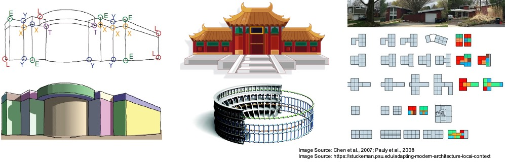

ONLINE - Sunday, August 23, 2020
Join Zoom Meeting | August 23, 8-10am (GMT+1)
Join Zoom Meeting | August 23, 4-6pm (GMT+1)
The perception of holistic scene structures, that is, orderly, regular, symmetric, or repetitive patterns and relationships in a scene, plays a critical role in human vision. When walking in a man-made environment, such as office buildings, a human can instantly identify parallel lines, rectangles, cuboids, rotational symmetries, repetitive patterns, and many other types of structure, and exploit them for accurate and robust 3D localization, orientation, and navigation. In computer vision, the use of such holistic structural elements has a long history in 3D modeling of physical environments. Due to their ability and potential in creating high-level, compact, and semantically rich scene representations, which are ideal for modern 3D vision tasks, these methods have drawn increased attention in the research community lately.
However, significantly more efforts are still required to enable real-world complex tasks, such as augmented reality, robot navigation and human-robot interaction, as they often demand human-level understanding of the environments. To fully harness the power of holistic scene structures as humans do, we are interested in the following questions:
As such, this workshop will bring together researchers working on exploring holistic scene structures for accurate, robust, and reliable 3D vision, as well as researchers who use structures in a variety of disciplines (e.g., robotics, VR/AR,interior design, and architectural engineering). In the workshop, both geometrybased and recent learning-based approaches will be discussed. We will examine the challenges, new directions, and the implication of industrial applications on holistic 3D modeling approaches.
[Live] Welcome remarks [Zoom webinar link]
[Live] Keynote talk #1 by Prof. Marc Pollefeys [Zoom webinar link]
[Live] Keynote talk #2 by Prof. Niloy Mitra [Zoom webinar link]
Invited talk #1 by Prof. Amir Zamir [video]
Invited talk #2 by Prof. Manolis Savva [video]
Holistic 3D Vision Challenges - track 1
Lunch Break
Holistic 3D Vision Challenges - track 2 summary remarks by Yichao Zhou [video]
Invited talk #3 by Prof. Florent Lafarge [video]
Invited talk #4 by Prof. Daniel Aliaga [video]
Invited talk #5 by Prof. Shubham Tulsiani [video]
Special session: ECCV 2020 papers on holistic 3D vision
[Live] Panel discussion with invited speakers [Zoom webinar link]